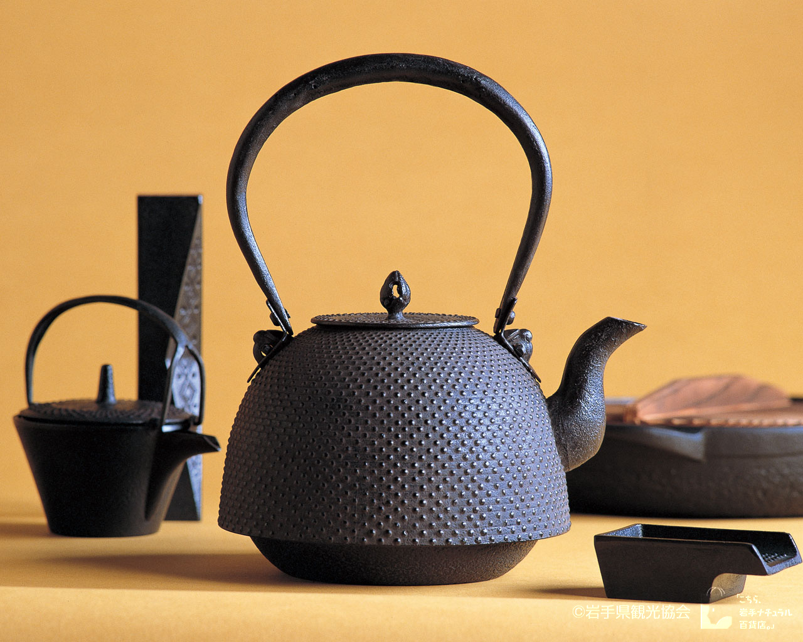
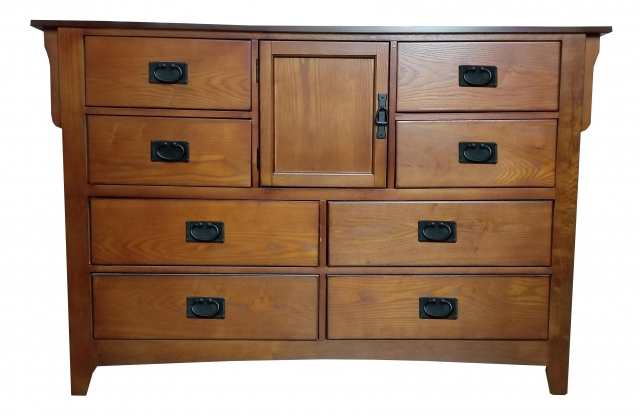
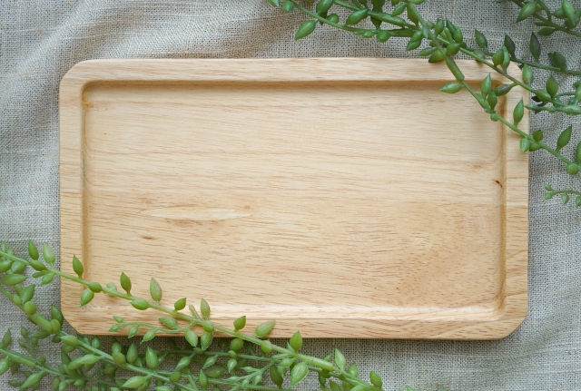
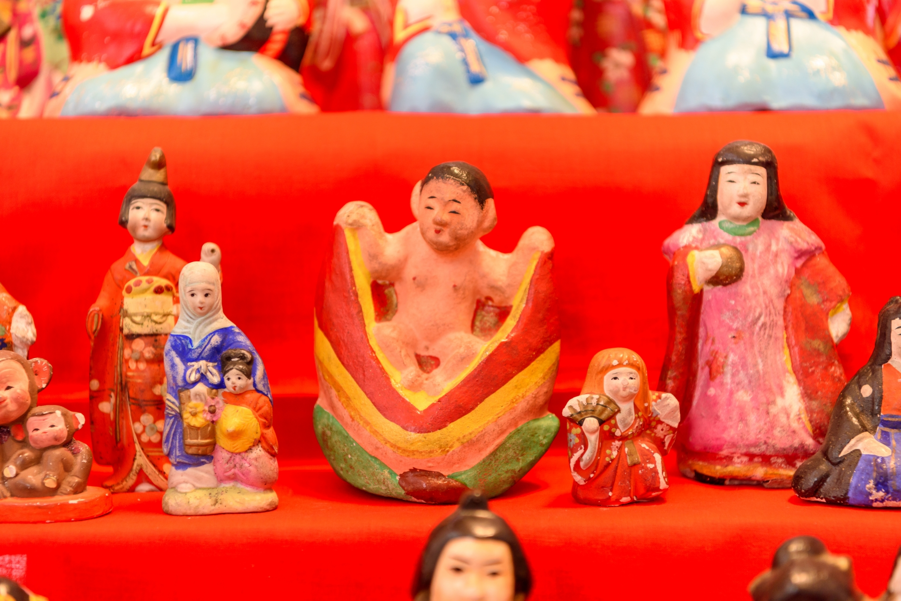
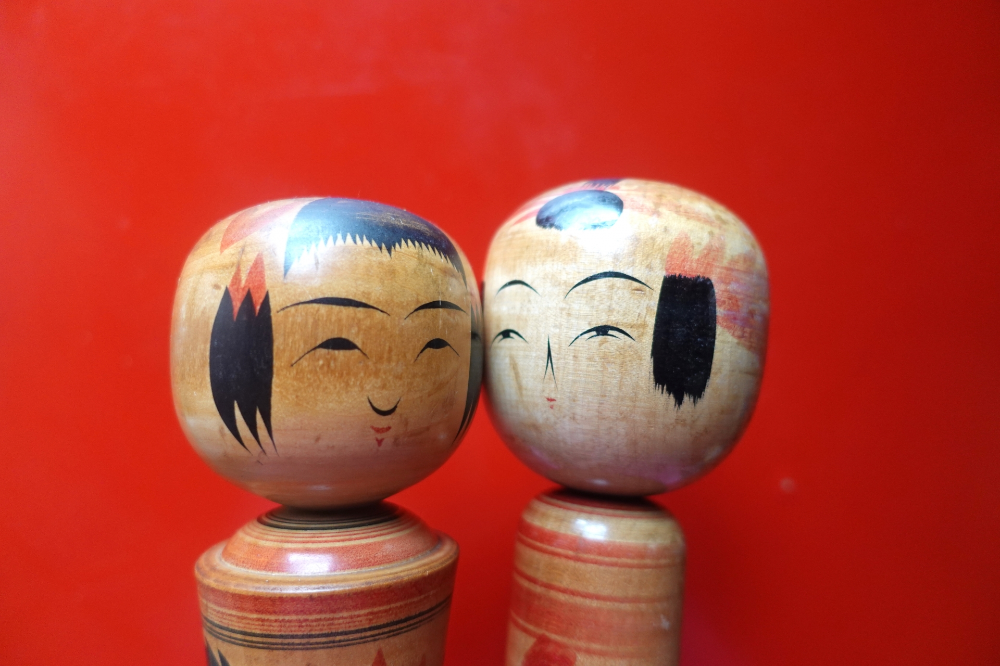

伝統工芸

南部鉄器
南部鉄器は岩手県で江戸時代中期から生産されている鉄器である。盛岡と奥州で作られているものが違っていたが、 両産地で作られた鉄器を「南部鉄器」ブランドとした。
盛岡市・奥州市

南部箪笥
南部箪笥は岩手県で産出される欅や桐を主材とした、伝統家具です。 岩手県指定伝統工芸品に認定されていて、美しい木目・塗装を持ち、手打ち彫金金具が特徴を持っています。
九戸村・二戸市・盛岡市

大野木工
大野木工は赤松・栃・センノキ・欅などを使用して作られる木の器です。 昭和55年に「大野村春のキャンパス80」をきっかけに裏作工芸で様々な木の食器がつくられています。
洋野町

遠野附馬牛人形
遠野の土と和紙を練り合わせて型取りをした後、自然乾燥し、胡粉を4～5回重ね塗りした後に彩色して仕上げて作られている人形です。
遠野市

雪やけこけし
永い冬暮しの間、炭焼きなどをしながら生活をしていた人々の赤黒く雪やけした顔を想起し、その素朴な姿を原木を用いて表現したのが雪やけこけしです。
アドレス
花巻人形
泥人形の一種で粘土で作り、節句人形に重点がおかれ、節句雛、宝船、恵比寿、大黒などの縁起物や子供たちの生活を表現したものが多いのが特徴です。
花巻市